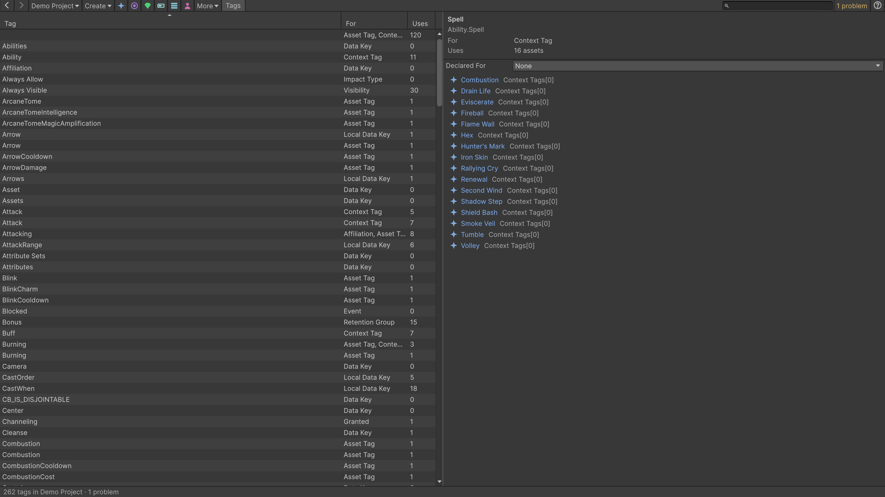

The Tags view
The Forge's Tags shows the active project's tags in place of its assets. It lists those its assets and its Tag Library use, those no asset uses, and those code exposes.

The Forge's Tags view: the project's tags, and the assets that use the one selected.
This section covers the view in brief. Tags covers tags, their contexts, the tag picker and the Tag Library.
In this section
- The tag list: The tag list takes the asset list's place while the toolbar's Tags is on.
- A tag's detail: A tag's detail, beside the list, shows the tag, what it's declared for and what uses it.
- Renaming a tag: A tag rename changes the tag, and the tags under its path, everywhere PlayForge stores them.
- Tags in code:
ForgeTagRegistryknows the tags in use.